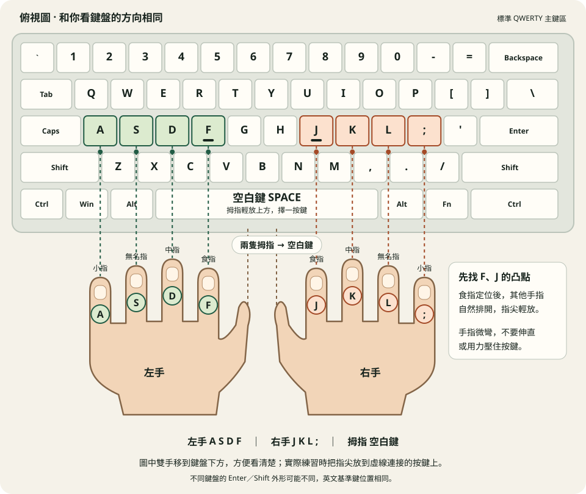

先坐好，讓雙手放鬆
雙腳平放、肩膀放鬆，鍵盤放在身體正前方。手肘自然彎曲，手腕保持自然平直，不要用力壓在桌緣。
現在試試看
輕輕甩一甩手，再把雙手放到鍵盤上。眼睛看螢幕，身體不用往前擠。
手機或平板也能開啟本站；練習十指指法時，請連接實體鍵盤。
START HERE / 新手教學
準備一個實體鍵盤，照著做就好。每一步都能回頭看，不用急著追求速度。
步驟 1 / 6
雙腳平放、肩膀放鬆，鍵盤放在身體正前方。手肘自然彎曲，手腕保持自然平直，不要用力壓在桌緣。
輕輕甩一甩手，再把雙手放到鍵盤上。眼睛看螢幕，身體不用往前擠。
手機或平板也能開啟本站；練習十指指法時，請連接實體鍵盤。
用兩隻食指摸摸 F 與 J，多數鍵盤有小凸點。這兩個位置能幫你不看鍵盤也找到基準鍵。

A 小指 S 無名指
D 中指 F 食指
J 食指 K 中指
L 無名指 ; 小指
把八根手指放回這八個鍵，拇指輕放空白鍵上方。移開雙手，再靠 F、J 凸點找到位置。
先切換英文輸入、關閉 Caps Lock，再依照下方文字輸入。每按一個鍵就放開，空格用拇指按空白鍵。
asdf jkl;
先求準確，慢慢輸入即可。
按 Backspace 刪除上一個字，再重新輸入。注意最後是半形分號 ;。
同一個鍵有上下兩個字元：直接按 1 會得到 1；按住 Shift 再按 1，就會得到 !。
輸入 !：右手小指按住右 Shift，左手小指按 1。
輸入 &：左手小指按住左 Shift，右手食指按 7。
輸入 +：左手小指按住左 Shift，右手小指按 =。
! @ # $ % ^ & * ( )
先練 !，再依序輸入其他符號；這裡不計時、不存成績。
打出數字？檢查是否持續按住 Shift。出現全形符號或其他字元？檢查輸入法、半形模式與鍵盤配置。
到「課程」選擇「基準鍵」，照著範例輸入。先練準，再練快；熟悉後依序練食指延伸、上排鍵、下排鍵、單字與短句。
綠字表示正確；紅色搭配底線表示打錯；橘色直線指出目前要輸入的位置。大小寫、空格與標點都要和範例一致。
注音鍵位課請切換英文輸入，網站會把實體按鍵轉成注音符號；中文詞語與句子課請自行切換中文輸入法，選字確認後再繼續。
請先進入基準鍵第一課，照著指法完成練習。熟悉鍵位後，再依下列方式挑戰測速。
英文看 WPM，中文看 CPM。訪客成績不列入班級排行榜；紀錄保存在目前瀏覽器。
ROOM 01 / DAILY PRACTICE
從基準鍵開始，讓每一次準確輸入都變成下一次更快的底氣。
不需註冊．資料不上傳．進度保存在你的瀏覽器
目前練習者：訪客
THE PATH
先讓左右手找到自己的家。ASDF、JKL; 是所有速度的起點。
HOME ROW手指離開基準鍵，探索上下排，輸入更多真實單字。
EXPLORE把練習帶進測驗，看看穩定的準確度能換來多少速度。
CHALLENGEYOUR LOG
LESSON LIBRARY / 02
循序漸進的練習，每一課都只多一點點難度。先穩，再快。
SPEED LAB / 03
計時會在你輸入第一個字時才開始。錯字會被記住，但不會定義你。
含中文字或注音使用 CPM；其他文章使用 WPM。修改後需重新套用。
中文請先切換自己的輸入法，選字確認後才計入字元。離開測速頁會中止本次測驗。
YOUR CLASS / LEADERBOARD
先求準確，再求速度。相同班級、姓名與座號沿用同一位練習者；不同班級分別累積紀錄。請固定使用同一種班級寫法。這是此瀏覽器的排行榜。
TEACHER DESK / 04
名單、紀錄、排行榜，都留在這個瀏覽器。適合投影，也適合課後快速查看。
這是全站共用的教師密碼。更新後，其他裝置的舊登入也會失效，所有教師需使用新密碼重新登入。
CLASS ROSTER
STUDENTS
下方統計、排行榜與明細依目前篩選顯示。英文與中文速度分開比較。
TOP SCORES
先求準確，再求速度；每次練習都算數。
RECENT RECORDS
PORTABLE DATA
把名單、課程進度和測驗紀錄完整帶走。備份僅含名單、進度、設定與成績，不含自訂文章。不同電腦不會自動同步；還原會取代目前資料。